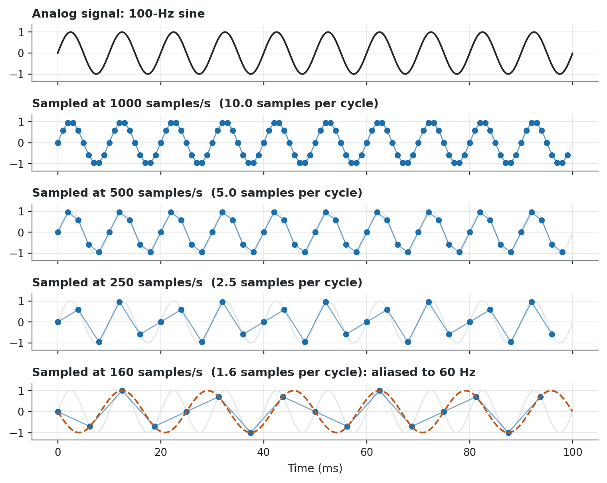
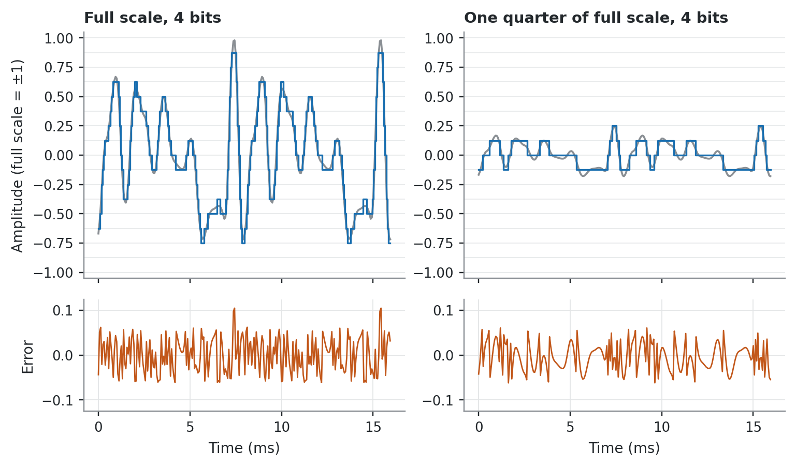
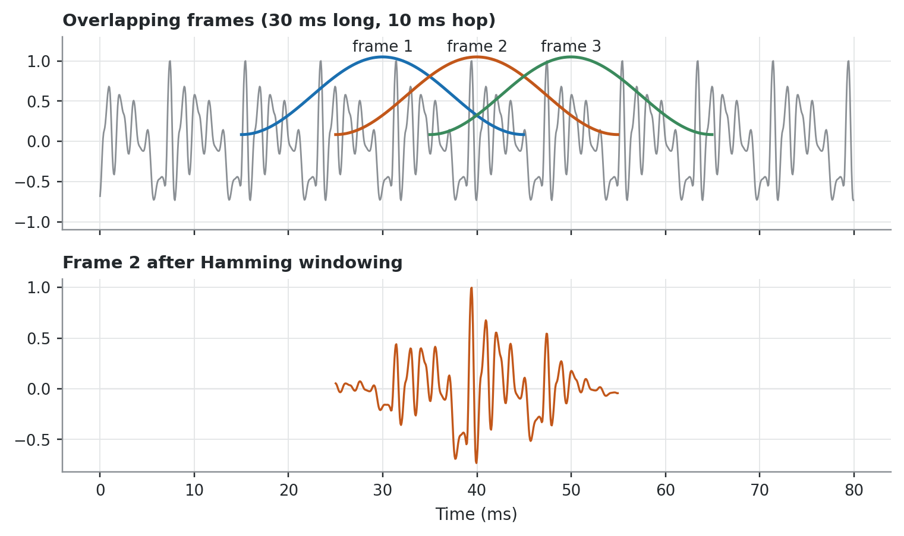

Living draft. This chapter defines the signal-processing vocabulary the rest of the reference uses. Later chapters cite it when they name a sampling rate, frame length, window, or transform. All figures are computed from synthetic signals; the code is shown under each figure and is MIT licensed. Found an error? Use the Report an issue link in the sidebar.
2.1 What every acoustic measure sees
Every acoustic measure in this reference is computed on a digital signal: a sequence of numbers that stands for the continuous pressure waveform at the microphone. The path from a sustained vowel to a jitter or CPPS value passes through five stages.
Sampling discretises time.
Quantization discretises amplitude.
Framing cuts the sample stream into short segments.
Windowing tapers each segment before spectral analysis.
Transformation moves the frame into the frequency or cepstral domain.
Sampling and quantization together are the essence of digitization (Kent and Read 2002, 62). Each stage has parameters (sampling rate, bit depth, frame length, window shape) that limit what a downstream measure can report. Every measure chapter names the parameters it presupposes, and this chapter is where those names are defined.
2.2 Continuous and discrete signals
A continuous-time signal has a value at every instant. A discrete-time signal has values only at chosen instants, and can be derived from a continuous one by sampling (Ludlow et al. 2018, 4). The operation that turns the microphone’s analog signal into a series of stored numbers is analog-to-digital (A/D) conversion. The reverse operation, needed to play a stored signal, is digital-to-analog (D/A) conversion (Kent and Read 2002, 63).
In the notation used throughout this reference, the sampled sequence is \(x[n] = x_a(nT)\), where \(x_a(t)\) is the analog signal, \(n\) is an integer sample index, and \(T\) is the sampling period (Rabiner and Schafer 2011, 44). The sampling rate is \(F_s = 1/T\).
2.3 Sampling and aliasing
The sampling rate is the number of samples taken per second. A rate of 10 kHz samples the analog signal 10,000 times per second (Kent and Read 2002, 62).
The sampling theorem states the condition for a lossless representation. If the analog signal contains no energy at or above a frequency \(F_N\), it can be reconstructed uniquely from its samples provided \(F_s \ge 2F_N\)(Rabiner and Schafer 2011, 44). \(F_N\) is the Nyquist frequency and \(2F_N\) is the Nyquist rate (Baken and Orlikoff 2000, 80). When the condition fails, energy above half the sampling rate reappears at a lower, false frequency. This error is called aliasing (Kent and Read 2002, 65).
Figure 2.1 repeats a classic demonstration. A 100-Hz sine is sampled at four rates. At 250 samples/s there are only 2.5 samples per cycle, yet the 100-Hz periodicity survives. At 160 samples/s there are fewer than two samples per cycle and the samples trace a slower wave (Baken and Orlikoff 2000, 80).
Show the code for this figure
f, dur =100.0, 0.1t = np.linspace(0, dur, 4000, endpoint=False)rates = [1000, 500, 250, 160]fig, axes = plt.subplots(len(rates) +1, 1, figsize=(7, 5.6), sharex=True)axes[0].plot(t *1e3, np.sin(2* np.pi * f * t), color=vs.INK, lw=1.4)axes[0].set_title("Analog signal: 100-Hz sine", color=vs.INK)for ax, fs inzip(axes[1:], rates): n = np.arange(int(dur * fs)) tn = n / fs xn = np.sin(2* np.pi * f * tn) ax.plot(t *1e3, np.sin(2* np.pi * f * t), color=vs.GRID, lw=1.0) ax.plot(tn *1e3, xn, color=vs.BLUE, lw=0.9, alpha=0.6) ax.plot(tn *1e3, xn, "o", color=vs.BLUE, ms=4) title =f"Sampled at {fs} samples/s ({fs / f:.1f} samples per cycle)"if fs <2* f: fa =abs(f - fs) ax.plot(t *1e3, -np.sin(2* np.pi * fa * t), "--", color=vs.ORANGE, lw=1.4) title +=f": aliased to {fa:.0f} Hz" ax.set_title(title, color=vs.INK)for ax in axes: vs.style_axes(ax) ax.set_ylim(-1.35, 1.35) ax.set_yticks([-1, 0, 1])axes[-1].set_xlabel("Time (ms)")fig.tight_layout()plt.show()

Figure 2.1: Sampling a 100-Hz sine at four rates (after the demonstration in Baken and Orlikoff, 2000, p. 80). Dots are samples. At 160 samples/s the samples fall on a 60-Hz wave (dashed): 100 Hz has been aliased to 160 − 100 = 60 Hz.
2.3.1 Choosing a sampling rate
The sampling rate must be at least twice the highest frequency of interest (Kent and Read 2002, 64). For voice work the highest frequency of interest is set by the harmonics and by any noise, not by F0. For a periodic physiological signal, the highest frequency of interest is usually about \(10F_0\), and sampling a little above the Nyquist rate (about 20 % more) gives a margin for residual noise (Baken and Orlikoff 2000, 81). Baken and Orlikoff recommend at least 20,000 samples/s for speech, and for any signal with significant aperiodic energy such as turbulence noise (Baken and Orlikoff 2000, 81). For archiving, 44.1 kHz with 16-bit depth is agreed good practice, and 44.1 or 96 kHz with 24-bit depth is best practice (Ludlow et al. 2018, 140).
The analysable bandwidth follows from the theorem.
A sampling rate that looks adequate is not sufficient on its own. Any energy above the Nyquist frequency will alias, so the signal must be band-limited by a low-pass anti-aliasing filter before the A/D converter (Baken and Orlikoff 2000, 81). Ordinary low-pass filters roll off too gently for this purpose. A component one octave above the cutoff may be attenuated by only about 12 dB, so anti-aliasing filters need very steep roll-offs (Baken and Orlikoff 2000, 81–82). Kent and Read give a working specification: pass-band ripple below 0.5 dB and stop-band attenuation of at least 68 dB (Kent and Read 2002, 64).
2.3.3 Pre-emphasis
Most speech analysis chains apply pre-emphasis, a high-frequency boost, before spectral analysis. Most of the energy of speech lies at low frequencies and would otherwise dominate the analysis (Kent and Read 2002, 63). Pre-emphasis is either a filter giving +6 dB/octave above a breakpoint between 100 and 1000 Hz, or first differencing of the samples, \(y[n] = x[n] - a\,x[n-1]\)(Kent and Read 2002, 63–64). The two methods give comparable results. A system that differences digitally must not also be fed through a hardware pre-emphasis filter, or the signal is pre-emphasised twice (Kent and Read 2002, 64). Pre-emphasis settings are one of the parameters to check when comparing values across software.
2.4 Quantization
Quantization discretises amplitude. Each sample is stored as one of \(2^N\) levels, where \(N\) is the number of bits (Ludlow et al. 2018, 4).
Bits (\(N\))
Levels (\(2^N\))
8
256
10
1,024
12
4,096
16
65,536
24
16,777,216
Rounding a smoothly varying signal to discrete levels adds spurious components called quantization noise. The noise is minimised by using as many quantization levels as possible (Baken and Orlikoff 2000, 79). As a rule, each additional bit adds about 6 dB to the signal-to-quantization-noise ratio (Rabiner and Schafer 2011, 688).
Bit depth only helps if the signal uses it. The step size of the converter is fixed, so a signal that spans a fraction of the input range is quantized with fewer effective levels. In Baken and Orlikoff’s example, a 2-V signal on a 10-bit converter with a 0 to 5 V range uses only 9 of the 10 bits (Baken and Orlikoff 2000, 79). Equivalently, a signal that varies over only half the converter’s range loses 6 dB of signal-to-quantization-noise ratio (Rabiner and Schafer 2011, 690). Figure 2.2 shows the effect.
Show the code for this figure
fs =16000per = np.full(8, 1/125)x = vs.synth_vowel(per, np.ones(8), fs)[: int(0.016* fs)]t = np.arange(len(x)) / fs *1e3bits =4step =2/2** bits # full range is -1..+1fig, axes = plt.subplots(2, 2, figsize=(7, 4.2), sharex=True, gridspec_kw={"height_ratios": [2.2, 1]})for col, gain inenumerate([0.98, 0.245]): xs = gain * x xq = np.clip(np.round(xs / step) * step, -1, 1- step) top, bot = axes[0, col], axes[1, col]for lev in np.arange(-1, 1+1e-9, step): top.axhline(lev, color=vs.GRID, lw=0.5, zorder=0) top.plot(t, xs, color=vs.MUTED, lw=1.2) top.step(t, xq, where="mid", color=vs.BLUE, lw=1.1) top.set_ylim(-1.05, 1.05) top.set_title(("Full scale"if col ==0else"One quarter of full scale")+f", {bits} bits", color=vs.INK) bot.plot(t, xs - xq, color=vs.ORANGE, lw=0.9) bot.set_ylim(-step, step) bot.set_xlabel("Time (ms)") vs.style_axes(top, grid=False) vs.style_axes(bot)axes[0, 0].set_ylabel("Amplitude (full scale = ±1)")axes[1, 0].set_ylabel("Error")fig.tight_layout()plt.show()

Figure 2.2: A 4-bit (16-level) converter applied to the same vowel-like waveform at full scale (left) and at one quarter of full scale (right). Top: signal (gray) and quantized samples (blue). Bottom: quantization error. The step size is the same in both columns, so the quiet signal carries the same absolute error on a four-times smaller waveform.
How many bits are enough depends on the measure and on the era of the recommendation. Baken and Orlikoff judged 12 bits adequate for clinical needs (Baken and Orlikoff 2000, 79), and treat 10 bits as the minimum for shimmer measurement (Baken and Orlikoff 2000, 132). Current archival practice records at 16 or 24 bits (Ludlow et al. 2018, 140). The practical rule is the same in every source that discusses it: amplify the signal so that its largest peaks are just below the converter’s maximum input (Baken and Orlikoff 2000, 79).
Going past the maximum is worse than staying well below it. An amplifier or converter driven beyond its range flattens the tops of the waveform. This peak clipping is one of the most common errors made by novices, and it can make a speech recording unsuitable for analysis even when the distortion is hard to see (Baken and Orlikoff 2000, 57).
2.5 Short-time analysis: frames and windows
Speech properties change slowly compared with the sample-to-sample detail of the waveform, at rates on the order of 10 to 30 times per second. Short-time analysis exploits this: it isolates short segments (frames) and processes each as if it came from a sustained sound with fixed properties (Rabiner and Schafer 2011, 242). Successive frames overlap to keep the analysis continuous, and each frame is multiplied by a window that reduces the effect of the abrupt cut at its edges (Ludlow et al. 2018, 168).
Show the code for this figure
fs =16000x = vs.synth_vowel(np.full(20, 1/125), np.ones(20), fs)[: int(0.08* fs)]t = np.arange(len(x)) / fs *1e3L, H =int(0.030* fs), int(0.010* fs)w = np.hamming(L)starts = [int(0.015* fs) + k * H for k inrange(3)]colors = [vs.BLUE, vs.ORANGE, vs.GREEN]fig, (a1, a2) = plt.subplots(2, 1, figsize=(7, 4.2), sharex=True)a1.plot(t, x, color=vs.MUTED, lw=0.9)for k, (s, c) inenumerate(zip(starts, colors)): tt = t[s:s + L] a1.plot(tt, w *1.05, color=c, lw=1.6) a1.text(tt[L //2], 1.12, f"frame {k +1}", color=vs.INK, ha="center", fontsize=8.5)a1.set_ylim(-1.1, 1.3)a1.set_title("Overlapping frames (30 ms long, 10 ms hop)", color=vs.INK)s = starts[1]a2.plot(t, np.zeros_like(t), color=vs.GRID, lw=0.8)a2.plot(t[s:s + L], x[s:s + L] * w, color=vs.ORANGE, lw=1.1)a2.set_title("Frame 2 after Hamming windowing", color=vs.INK)a2.set_xlabel("Time (ms)")for ax in (a1, a2): vs.style_axes(ax)fig.tight_layout()plt.show()

Figure 2.3: Short-time analysis of a synthetic vowel (F0 = 125 Hz). Top: three successive 30-ms frames with a 10-ms hop (67 % overlap), each drawn as its Hamming window. Bottom: the second frame after windowing, which is what the Fourier transform of that frame actually receives.
2.5.1 Frame length
No single frame length is ideal. A frame on the order of one pitch period or shorter makes short-time measures fluctuate with the exact waveform detail. A frame of tens of pitch periods changes too slowly to follow the signal. Pitch periods range from about 2 ms (500 Hz, a child or high female voice) to about 12.5 ms (80 Hz, a very low male voice). Rabiner and Schafer therefore suggest frames of 10 to 40 ms with 50 to 75 % overlap between successive frames (Rabiner and Schafer 2011, 248). Ludlow, Kent and Gray describe frames on the order of 25 to 50 ms, long enough to include at least two pitch periods of a man’s voice (Ludlow et al. 2018, 168).
2.5.2 Window shape
The window shape controls how energy at one frequency leaks into its neighbours. The Hamming window used by most voice software is
(Rabiner and Schafer 2011, 57). Two properties of a window’s spectrum matter: the width of its main lobe and the height of its side lobes. The main-lobe width is inversely proportional to the window length, while the side-lobe level depends mainly on the window shape (Rabiner and Schafer 2011, 297).
For the same length, the rectangular window has half the main-lobe width of the Hamming window, but its large side lobes let strong harmonics leak across the spectrum and offset that advantage (Rabiner and Schafer 2011, 302–3). Figure 2.4 shows both windows and their spectra.
Figure 2.4: Rectangular and Hamming windows of the same length (30 ms). Left: the windows in time. Right: their magnitude spectra in dB. The Hamming window has a main lobe about twice as wide but side lobes more than 40 dB down, against about 13 dB for the rectangular window.
2.5.3 Narrowband and wideband analysis
Frame length decides whether the analysis resolves harmonics or glottal cycles. When the window spans several pitch periods, its main lobe is narrower than the harmonic spacing and each harmonic appears as a separate peak. This is narrowband analysis. When the window spans about one pitch period, harmonics are not resolved, but individual glottal periods are resolved in time. This is wideband analysis (Rabiner and Schafer 2011, 299).
Rabiner and Schafer’s worked example makes the numbers concrete. A 31.25-ms Hamming window has a main lobe about 128 Hz wide. That is narrower than the 148-Hz F0 of their speaker, so the harmonics separate (Rabiner and Schafer 2011, 299). The same arithmetic shows why a 30-ms Hamming window does not resolve harmonics below about 130 Hz cleanly: \(4/0.030 \approx
133\) Hz. Longer windows are needed for low voices.
Figure 2.5: The same synthetic vowel, with F0 rising from 110 to 200 Hz over 0.35 s, analysed with a long and a short Hamming window. Left, narrowband (40 ms): horizontal lines are the harmonics, and they separate more clearly as F0 rises. Right, wideband (4 ms): harmonics merge into formant bands, and the vertical striations are individual glottal cycles.
2.6 Time, frequency, and cepstral domains
Periodicity has an exact definition. A waveform \(f(t)\) is periodic with period \(T\) when \(f(t + T) = f(t)\) for every \(t\): the waveform is an exact copy of itself after \(T\) seconds (Titze 2000, 96). Periodicity in time and harmonicity in frequency are the same property seen from the two sides of the time-frequency relation (Titze 2000, 95). Voice measures look for this property in one of three domains (Figure 2.6).
Time domain. The sample sequence \(x[n]\) itself. Waveform display, F0 analysis, and jitter and shimmer analysis work here (Kent and Read 2002, 62).
Frequency domain. The magnitude of the discrete Fourier transform of a windowed frame is its short-time spectrum; a sequence of such spectra is a spectrogram. Spectrograms, FFT and LPC spectra, and signal-to-noise computations work here (Kent and Read 2002, 62).
Cepstral domain. The cepstrum of a discrete-time signal is the inverse Fourier transform of the logarithm of the magnitude of its Fourier transform. Its independent variable is called quefrency, and it has units of time (Rabiner and Schafer 2011, 399). For a voiced frame, the cepstrum has a peak at the quefrency equal to the pitch period. A strong peak signals voicing, and its position estimates the period (Rabiner and Schafer 2011, 425). Cepstral peak prominence measures the height of this peak; see the CPPS chapter.
Figure 2.6: One 40-ms frame of a synthetic vowel (F0 = 125 Hz, period 8 ms) in the three domains. Top: waveform, with the 8-ms period marked. Middle: log-magnitude spectrum, with harmonics every 125 Hz. Bottom: cepstrum, with its dominant peak at a quefrency of 8 ms.
When the periodicity condition fails badly, measures that depend on a period lose their meaning. The Signal Typing chapter describes how to recognise such signals before measuring them.
2.7 Sampling rate and cycle-level measures
Jitter and shimmer are computed cycle by cycle, not frame by frame, so they have their own digitisation limits. A cycle boundary can be located only to within one sampling interval, \(1/F_s\). That error is fixed while the period shortens as F0 rises, so the relative error grows in proportion to F0 (Baken and Orlikoff 2000, 193). Baken and Orlikoff give the maximum jitter error due to sampling, after Titze, Horii and Scherer (1987), as \(\pm 50\,F_0/F_s\) percent. At 25,000 samples/s this is 0.2 % for a 100-Hz voice and 0.6 % for a 300-Hz voice, which they call large compared with the jitter expected in a normal voice (Baken and Orlikoff 2000, 194).
Table 2.1: Maximum jitter error from the relation \(\pm 50\,F_0/F_s\) %. The 25-kHz column is given by Baken and Orlikoff (2000, 194); the other columns apply the same relation.
Mean F0
Max. error at 25 kHz
at 44.1 kHz
at 96 kHz
100 Hz
0.20 %
0.11 %
0.05 %
200 Hz
0.40 %
0.23 %
0.10 %
300 Hz
0.60 %
0.34 %
0.16 %
Interpolation between samples greatly reduces this limitation and makes ordinary sampling rates adequate for everyday practice (Baken and Orlikoff 2000, 194). Sample size also matters. For normal voices, as few as 30 consecutive cycles may be adequate for a jitter estimate (Baken and Orlikoff 2000, 194), and at least 30 consecutive cycles should be included for shimmer (Baken and Orlikoff 2000, 132). For shimmer, any low-pass filter should have its cutoff at least one octave above F0, because filtering alters peak amplitudes (Baken and Orlikoff 2000, 132).
2.8 Caveats
Software defaults differ. Different analysis systems can return different jitter and shimmer values for the same signal, and software characteristics do not account for all of the variability (Baken and Orlikoff 2000, 132, 194). Frame length, window, pre-emphasis and interpolation are all candidates. Report the software and its settings with every value.
Check the whole chain, not only the file header. A file saved at a high sampling rate is only as good as the anti-aliasing filter and the gain setting used when it was recorded (Baken and Orlikoff 2000, 79, 81).
Clipping cannot be undone. Peak clipping removes waveform detail at recording time (Baken and Orlikoff 2000, 57). Inspect every recording for flattened peaks before analysis.
Frame length is a choice with consequences. A window long enough to resolve the harmonics of a low voice smears fast changes, and a short one does the reverse (Rabiner and Schafer 2011, 248, 299). Measure chapters state the frame length each measure assumes.
2.9 Points of disagreement
The sources give different numerical recommendations for the same parameters. The differences reflect their dates and purposes rather than a conflict about the underlying theory.
Baken, Ronald J., and Robert F. Orlikoff. 2000. Clinical Measurement of Speech and Voice. 2nd ed. Singular Thomson Learning.
Kent, Raymond D., and Charles Read. 2002. The Acoustic Analysis of Speech. 2nd ed. Singular Thomson Learning.
Ludlow, Christy L., Raymond D. Kent, and Lincoln C. Gray. 2018. Measuring Voice, Speech, and Swallowing in the Clinic and Laboratory. Plural Publishing.
Rabiner, Lawrence R., and Ronald W. Schafer. 2011. Theory and Applications of Digital Speech Processing. Pearson.
Titze, Ingo R. 2000. Principles of Voice Production. Revised. National Center for Voice; Speech.